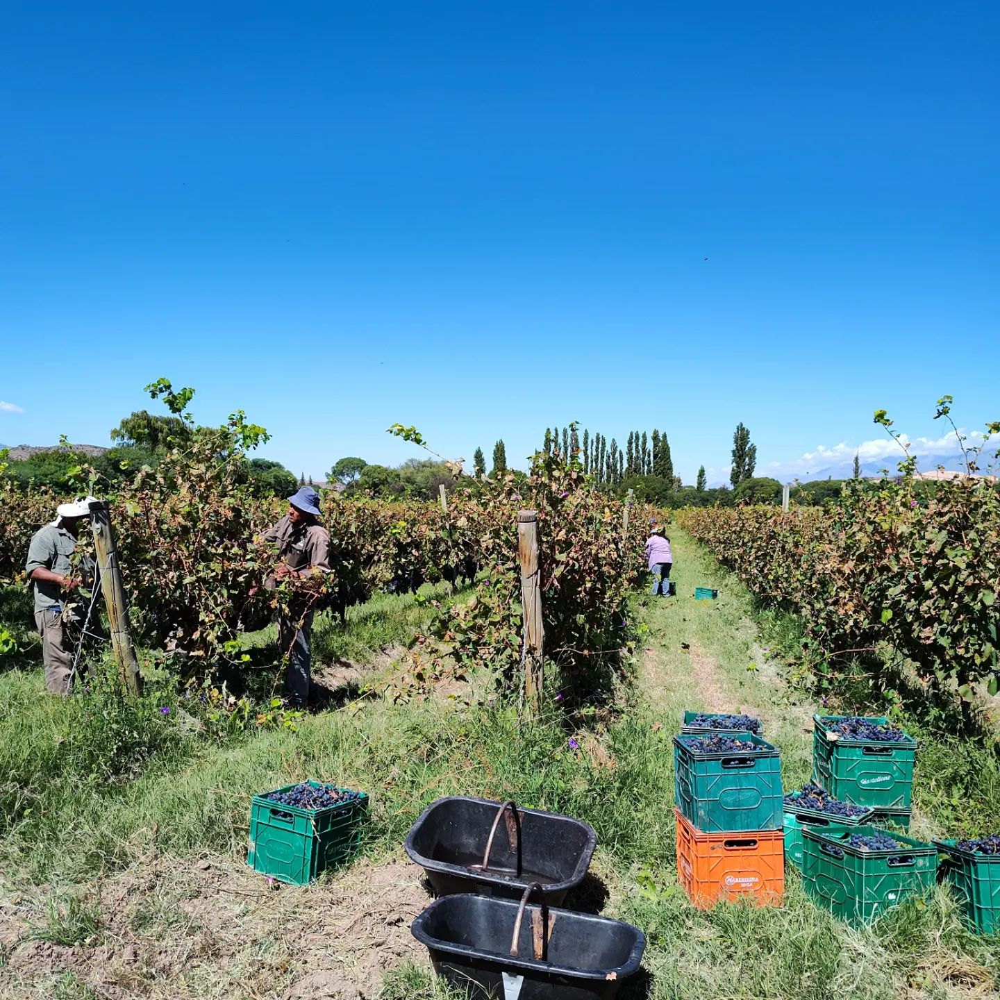

— Etapa 01 —
La vendimia manual
Cosechamos a mano, seleccionando cada racimo con cuidado. Sin máquinas, sin apuro. Cada uva que entra a nuestra bodega fue elegida por alguien de la familia, porque sabemos que la calidad del vino empieza mucho antes que la fermentación.
La cosecha se realiza en las primeras horas de la mañana, cuando las temperaturas nocturnas mantienen la uva fresca y con toda su carga aromática intacta.
